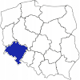

„Rzeki w województwie dolnośląskim
Wszystkie
Ponad stan ostrzegawczy
Ponad stan alarmowy
Pokaż
Stany na dzień 2022-05-05
Wodomierz
Rzeka
Ostrzegawczy
Alarmowy
Aktualny
Informacje
Brak ostrzeżeń o burzach z gradem
Smog w mieście Wrocław
Silny wiatr w Karkonoszach
Średnie stany wód